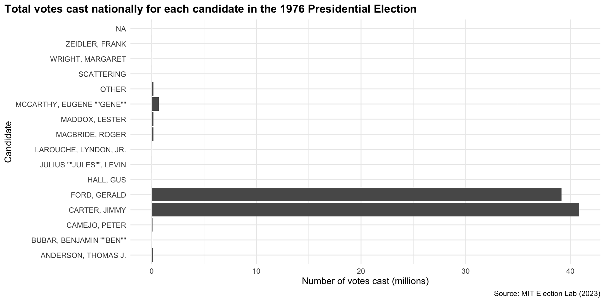
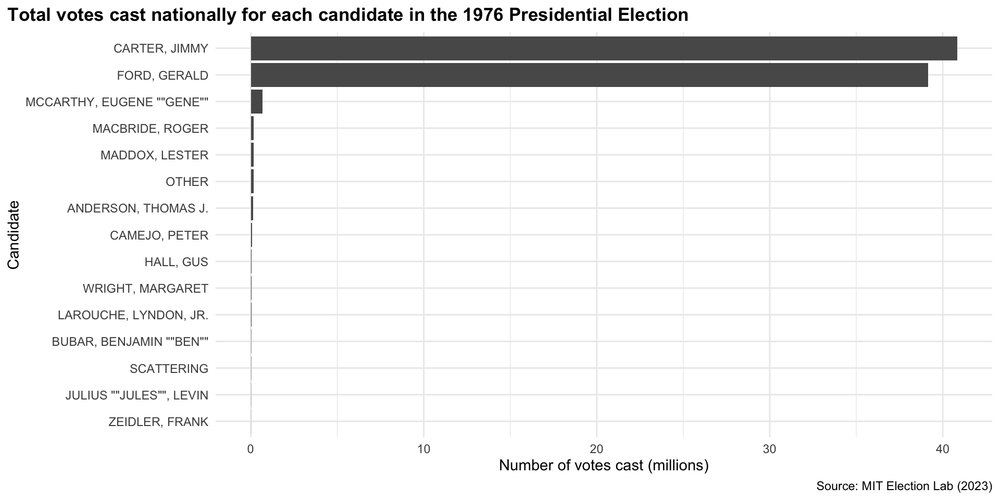
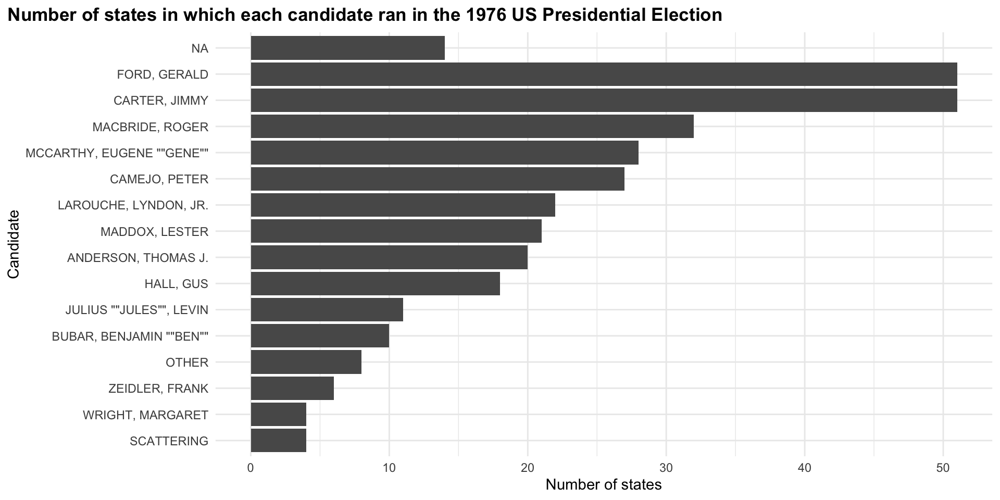
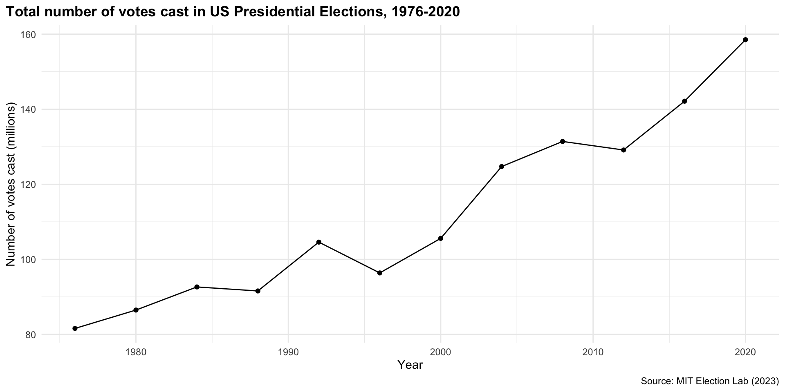

install.packages(c("tidyverse", "here"))Predicting outcomes
Predicting the outcome of the 2024 US Presidential election
In November, the US voting public will cast their vote for the next US President. Who do you think will receive the most votes? What information did you use to make this guess?
I guess that President Biden will receive the most votes across the US. Why?
I assume that an individual’s demographics (their gender, level of education, income, county of residence, etc.) are good predictors of their vote in US Presidential elections.
I assume that the factors connecting demographics to an individual’s political preferences have not changed in the intervening years between the last election and this one.
I assume that individuals view their choice for President identically to how they viewed this choice at the last election. This is because the two major parties are fielding the same candidate they did in this previous election.
I assume that the US voting public looks similar to how it did during the last election.
Therefore, I predict that the distribution of votes will be identical to last election’s results; President Biden will once again receive the greatest number of votes.
There are some pretty wild assumptions undergirding my prediction. Setting any issues you have with those assumptions aside, let’s check one of my factual statements: President Biden won the majority of the votes cast in the last US Presidential Election.
What happened last time?
What proportion of US voters voted for President Biden in 2020? To answer this question, we will look at state-level returns for elections for the US presidency. These data are provided by the MIT Election Data and Science Lab.
Exercise
To access, clean, and analyse these data, we are going to use a series of functions from the tidyverse R packages loaded in below:
Installing packages
If you have not already done so, please install the following packages:
Please remember that you only need to do this once (unless you want to update the package). Do not include this command in your R script. Rather, run it in your console.
Accessing previous election results
We are going to download and use the MIT Election Lab’s U.S. President 1976-2020 dataset. You can find it on their Data page.
The data are stored on the Harvard Dataverse. This is a data sharing platform used commonly by academics to share their data and other replication files. When you publish your research, you might provide your data and R scripts to the public using this platform.
We are going to download the 1976-2020-president.tab file from the U.S. President 1976-2020 page.
Note
You will need to provide your information to access the data. Please use your UMD credentials (instead of your personal ones).
Once you have downloaded the 1976-2020-president.csv file, you need to move it into your current RProject folder. I like to store raw data in a sub-folder called data-raw (I store cleaned data in a sub-folder called data), but you can place the file anywhere you like within this project.
Note
Manually downloading files can be tedious, especially when they are updated regularly. Happily, the Harvard Dataverse has an API that allows us to access its data sets programmatically. Working with APIs can be a little tricky, and require a few more R skills than you may currently have. We will learn how to work with this API in later weeks.
Importing data
We now have access to the state-level returns for elections to the US presidency from 1976 to 2020. All we need to do is read them in!
To do that, you are going to provide the file’s location (as a string) as the first argument in the function read_csv().
Dynamic filepaths
Your file will be stored somewhere on your local computer. This means that this file path is going to be different for each of us (and each computer!). For example, my version of 1976-2020-president.csv is stored here:
[1] "/Users/harrietgoers/Documents/GVPT622/content/data/1976-2020-president.csv"If I include that file path as the argument in read_csv() the code will run and I will have read the data set into my current R session. Happy days!
However, when I share this code with you (or when I try to run it on a different computer) I will get an error! It will say:
[1] "Error: '/Users/harrietgoers/Documents/GVPT622/content/data/1976-2020-president.csv' does not exist."That’s because this file path is unique to my computer. That’s a problem because I want my scripts to run on anyone’s computer. Happily, we have a solution: here::here()!
The here() function from the here R package places you within the top-level directory of your current project, no matter which computer you are working from. This makes for much more robust code.
For example, I am currently working from my GVPT622 RProject (the project that stores all of the scripts that build this website!). From that top-level directory, I have stored 1976-2020-president.csv in a sub-folder called data, which is located in a sub-folder called content. So, all I need to do is leave that trail of breadcrumbs for here::here() to follow:
here::here("content", "data", "1976-2020-president.csv")[1] "/Users/harrietgoers/Documents/GVPT622/content/data/1976-2020-president.csv"Now, if I sent you this RProject folder and you were to run this script, here::here() would change part of the file path unique to my computer (/Users/harrietgoers/Documents/) to reflect where you have stored this RProject on your computer. No more annoying errors! Yay!
So, we are going to use this more robust file referencing process to tell read_csv() where our data are located:
Tip
Make sure to adjust your breadcrumbs to reflect your own folder structure.
# A tibble: 4,287 × 15
year state state_po state_fips state_cen state_ic office candidate
<dbl> <chr> <chr> <dbl> <dbl> <dbl> <chr> <chr>
1 1976 ALABAMA AL 1 63 41 US PRESIDENT "CARTER, J…
2 1976 ALABAMA AL 1 63 41 US PRESIDENT "FORD, GER…
3 1976 ALABAMA AL 1 63 41 US PRESIDENT "MADDOX, L…
4 1976 ALABAMA AL 1 63 41 US PRESIDENT "BUBAR, BE…
5 1976 ALABAMA AL 1 63 41 US PRESIDENT "HALL, GUS"
6 1976 ALABAMA AL 1 63 41 US PRESIDENT "MACBRIDE,…
7 1976 ALABAMA AL 1 63 41 US PRESIDENT <NA>
8 1976 ALASKA AK 2 94 81 US PRESIDENT "FORD, GER…
9 1976 ALASKA AK 2 94 81 US PRESIDENT "CARTER, J…
10 1976 ALASKA AK 2 94 81 US PRESIDENT "MACBRIDE,…
# ℹ 4,277 more rows
# ℹ 7 more variables: party_detailed <chr>, writein <lgl>,
# candidatevotes <dbl>, totalvotes <dbl>, version <dbl>, notes <lgl>,
# party_simplified <chr>Brilliant! You just read into R your first file. But how do we use it?
Objects
When we read a data set into our current R session, we want to assign it as an object. We can then use and modify this object as we like.
I am going to assign this data set to an object named prev_state_lvl_results:
This means that I can now use the data set by simply running:
prev_state_lvl_results# A tibble: 4,287 × 15
year state state_po state_fips state_cen state_ic office candidate
<dbl> <chr> <chr> <dbl> <dbl> <dbl> <chr> <chr>
1 1976 ALABAMA AL 1 63 41 US PRESIDENT "CARTER, J…
2 1976 ALABAMA AL 1 63 41 US PRESIDENT "FORD, GER…
3 1976 ALABAMA AL 1 63 41 US PRESIDENT "MADDOX, L…
4 1976 ALABAMA AL 1 63 41 US PRESIDENT "BUBAR, BE…
5 1976 ALABAMA AL 1 63 41 US PRESIDENT "HALL, GUS"
6 1976 ALABAMA AL 1 63 41 US PRESIDENT "MACBRIDE,…
7 1976 ALABAMA AL 1 63 41 US PRESIDENT <NA>
8 1976 ALASKA AK 2 94 81 US PRESIDENT "FORD, GER…
9 1976 ALASKA AK 2 94 81 US PRESIDENT "CARTER, J…
10 1976 ALASKA AK 2 94 81 US PRESIDENT "MACBRIDE,…
# ℹ 4,277 more rows
# ℹ 7 more variables: party_detailed <chr>, writein <lgl>,
# candidatevotes <dbl>, totalvotes <dbl>, version <dbl>, notes <lgl>,
# party_simplified <chr>Let’s take a look at that object. We get some pretty useful information from this print out. From it we learn that we have 4,287 rows and 15 columns of data. What does this mean?
Well, this data set provides us with information for each election from 1976 to 2020. It provides the number of votes cast in each state for each presidential candidate in each of those races. Therefore, each row provides us with data for each candidate in each state and in each election. For example, the first row of our data set provides information on…
slice(prev_state_lvl_results, 1)# A tibble: 1 × 15
year state state_po state_fips state_cen state_ic office candidate
<dbl> <chr> <chr> <dbl> <dbl> <dbl> <chr> <chr>
1 1976 ALABAMA AL 1 63 41 US PRESIDENT CARTER, JIM…
# ℹ 7 more variables: party_detailed <chr>, writein <lgl>,
# candidatevotes <dbl>, totalvotes <dbl>, version <dbl>, notes <lgl>,
# party_simplified <chr>Jimmy Carter in the 1976 Alabama race.
Exercise
Which race, state, and candidate does the 100th row refer to?
Answer
slice(prev_state_lvl_results, 100)# A tibble: 1 × 15
year state state_po state_fips state_cen state_ic office candidate
<dbl> <chr> <chr> <dbl> <dbl> <dbl> <chr> <chr>
1 1976 KANSAS KS 20 47 32 US PRESIDENT MACBRIDE, RO…
# ℹ 7 more variables: party_detailed <chr>, writein <lgl>,
# candidatevotes <dbl>, totalvotes <dbl>, version <dbl>, notes <lgl>,
# party_simplified <chr>Roger Macbride’s race in Kansas in 1976.
We refer to this as our unit of observation. More succinctly, I would say that our unit of observation is candidate-state-election year. We have information on 4,287 different candidate-state-election years.
How much information do we have on each of these candidate-state-election years? This data set includes 15 variables. They include the election year (year), the candidate’s name (candidate), their party (party_detailed), the number of votes they received in each state (candidarevotes), and the total number of votes cast in that state (totalvotes).
You get a quick summary of these data using the function glimpse():
glimpse(prev_state_lvl_results)Rows: 4,287
Columns: 15
$ year <dbl> 1976, 1976, 1976, 1976, 1976, 1976, 1976, 1976, 1976,…
$ state <chr> "ALABAMA", "ALABAMA", "ALABAMA", "ALABAMA", "ALABAMA"…
$ state_po <chr> "AL", "AL", "AL", "AL", "AL", "AL", "AL", "AK", "AK",…
$ state_fips <dbl> 1, 1, 1, 1, 1, 1, 1, 2, 2, 2, 2, 4, 4, 4, 4, 4, 4, 4,…
$ state_cen <dbl> 63, 63, 63, 63, 63, 63, 63, 94, 94, 94, 94, 86, 86, 8…
$ state_ic <dbl> 41, 41, 41, 41, 41, 41, 41, 81, 81, 81, 81, 61, 61, 6…
$ office <chr> "US PRESIDENT", "US PRESIDENT", "US PRESIDENT", "US P…
$ candidate <chr> "CARTER, JIMMY", "FORD, GERALD", "MADDOX, LESTER", "B…
$ party_detailed <chr> "DEMOCRAT", "REPUBLICAN", "AMERICAN INDEPENDENT PARTY…
$ writein <lgl> FALSE, FALSE, FALSE, FALSE, FALSE, FALSE, TRUE, FALSE…
$ candidatevotes <dbl> 659170, 504070, 9198, 6669, 1954, 1481, 308, 71555, 4…
$ totalvotes <dbl> 1182850, 1182850, 1182850, 1182850, 1182850, 1182850,…
$ version <dbl> 20210113, 20210113, 20210113, 20210113, 20210113, 202…
$ notes <lgl> NA, NA, NA, NA, NA, NA, NA, NA, NA, NA, NA, NA, NA, N…
$ party_simplified <chr> "DEMOCRAT", "REPUBLICAN", "OTHER", "OTHER", "OTHER", …Types of data
What are those three-letter abbreviations next to the column names? They are the data type. Data types really matter, particularly when running statistical analysis in R. Here we have three different types of data:
| Data type | Description |
|---|---|
| dbl | Double, or numbers with decimals (1.0, 33.5, 7.67) |
| chr | Character, or letters, words, sentences (“A”, “cat”, “5”) |
| lgl | Logical (TRUE, FALSE) |
In an effort not to be too boring, we will talk about data types as we walk through working with data (today and over the coming weeks). It is important to note now that each column can only contain one data type. For example, a column that contains doubles (or numbers) cannot also include characters (or words). This makes working with data a lot easier. Imagine trying to find the average of a column and including a character in that calculation!
What proportion of US voters voted for each candidate?
We have data on the total number of people in each state who voted for each candidate and the total number of people who voted in each state. We want to find the proportion of US voters who voted for President Biden in the 2020 election. How do we get from here to there?
Let’s start by calculating the total number of US voters nationally who voted for each candidate in each election and the total number of people who voted in each election nationally. To do this, we need to aggregate from the state-level to the national-level.
We are going to use group_by() to group our data together by candidate and election year. That will allow us to calculate the sum (using the aptly named sum() function) for each candidate in each election.
Because we are aggregating our data, we use the summarize() (or summarise(), if you aren’t American!) to return only one observation (or row) for each candidate in each election.
Exercise
What will be our new unit of observation?
Answer
Candidate-election year.
prev_nat_lvl_results <- prev_state_lvl_results |>
# Divide the dataset up by election year and candidate
group_by(year, candidate) |>
# Calculate the total number of voters who voted in each of these groups
summarise(nationalcandidatevotes = sum(candidatevotes),
nationaltotalvotes = sum(totalvotes)) |>
# Ungroup our data
ungroup()
prev_nat_lvl_results# A tibble: 370 × 4
year candidate nationalcandidatevotes nationaltotalvotes
<dbl> <chr> <dbl> <dbl>
1 1976 "ANDERSON, THOMAS J." 147835 28498006
2 1976 "BUBAR, BENJAMIN \"\"BEN\"\"" 15888 13255917
3 1976 "CAMEJO, PETER" 89737 59540602
4 1976 "CARTER, JIMMY" 40825839 88269606
5 1976 "FORD, GERALD" 39145771 88269606
6 1976 "HALL, GUS" 57721 43458746
7 1976 "JULIUS \"\"JULES\"\", LEVIN" 9229 25681673
8 1976 "LAROUCHE, LYNDON, JR." 39148 46223231
9 1976 "MACBRIDE, ROGER" 171266 55303046
10 1976 "MADDOX, LESTER" 168623 35723586
# ℹ 360 more rowsI have stored this new data set as an object called prev_nat_lvl_results. If you look over to your environment (in the box that is probably located in the top right hand corner of your RStudio), you should now see two objects: prev_state_lvl_results and prev_nat_lvl_results.
You might have noticed that this new data set is smaller than the state-level one. This is good! We now have an aggregate count of the number of US voters across the US who voted for each candidate in each election.
What do we find? The first row tells us that across the entire US, Thomas J. Anderson received only 147,835 votes in the 1976 US Presidential Election.
Who received the most votes that year?
prev_nat_lvl_results |>
# Only include data from the 1976 election
filter(year == 1976) |>
# Find the maximum number of votes cast for a candidate in that election
slice_max(nationalcandidatevotes)# A tibble: 1 × 4
year candidate nationalcandidatevotes nationaltotalvotes
<dbl> <chr> <dbl> <dbl>
1 1976 CARTER, JIMMY 40825839 88269606Jimmy Carter, who received 40,825,839 votes.
How did each candidate do in this election? We can easily answer this question by visualizing our data:
prev_nat_lvl_results |>
# Only include the 1976 Presidential Election
filter(year == 1976) |>
# Plot votes cast by candidate
ggplot(aes(x = nationalcandidatevotes / 1e06, y = candidate)) +
geom_col() +
# Make the plot more readable
theme_minimal() +
theme(plot.title.position = "plot",
plot.title = element_text(face = "bold")) +
# Include informative labels
labs(x = "Number of votes cast (millions)",
y = "Candidate",
title = "Total votes cast nationally for each candidate in the 1976 Presidential Election",
caption = "Source: MIT Election Lab (2023)")
ggplot() has (by default) ordered our y-axis by reverse alphabethical order. Let’s use a more useful order: the number of votes cast for each candidate. Let’s also get rid of those votes cast for no candidate (NA).
prev_nat_lvl_results |>
filter(year == 1976) |>
drop_na(candidate) |>
ggplot(aes(x = nationalcandidatevotes / 1e06, y = reorder(candidate, nationalcandidatevotes))) +
geom_col() +
theme_minimal() +
theme(plot.title.position = "plot",
plot.title = element_text(face = "bold")) +
labs(x = "Number of votes cast (millions)",
y = "Candidate",
title = "Total votes cast nationally for each candidate in the 1976 Presidential Election",
caption = "Source: MIT Election Lab (2023)")
As expected, the Democratic and Republican candidates received the vast majority of votes cast. What proportion of votes did they receive?
Let’s go back to our full data set:
prev_nat_lvl_results# A tibble: 370 × 4
year candidate nationalcandidatevotes nationaltotalvotes
<dbl> <chr> <dbl> <dbl>
1 1976 "ANDERSON, THOMAS J." 147835 28498006
2 1976 "BUBAR, BENJAMIN \"\"BEN\"\"" 15888 13255917
3 1976 "CAMEJO, PETER" 89737 59540602
4 1976 "CARTER, JIMMY" 40825839 88269606
5 1976 "FORD, GERALD" 39145771 88269606
6 1976 "HALL, GUS" 57721 43458746
7 1976 "JULIUS \"\"JULES\"\", LEVIN" 9229 25681673
8 1976 "LAROUCHE, LYNDON, JR." 39148 46223231
9 1976 "MACBRIDE, ROGER" 171266 55303046
10 1976 "MADDOX, LESTER" 168623 35723586
# ℹ 360 more rowsYou may have noticed that we have different numbers indicating the total number of votes cast nationally in each election (nationaltotalvotes). In 1976 alone we have 15 different answers ranging from 5,552,843 to 88,269,606 to the question “how many people voted in this election nationally?”. We should have one answer! What is going on?
Exercise
Before you read on, see if you can answer this question. Not everyone is an Americanist (or American), so I will give you some hints:
Notice how the number recorded in that
nationaltotalvotescolumn for the Democractic candidate (Jimmy Carter) and Republican candidate (Gerald Ford) are the same.Notice also that all other candidates have smaller numbers recorded in
nationaltotalvotes.Finally, think back to the unit of observation with which we started: state-candidate-election year.
Why do we get several different answers to the question “how many people voted in the national election?” when we calculate the sum total of people who voted in every state? Because not all candidates were included in all states’ ballots. The independents and smaller party candidates did not run in several states. The only two candidates to run in all 50 states and DC were the Democratic and Republican ones.
To double check this, we can count the number of states in which each candidate ran. We go back to our state-level results:
prev_state_lvl_results |>
filter(year == 1976) |>
distinct(candidate, state) |>
group_by(candidate) |>
count()# A tibble: 16 × 2
# Groups: candidate [16]
candidate n
<chr> <int>
1 "ANDERSON, THOMAS J." 20
2 "BUBAR, BENJAMIN \"\"BEN\"\"" 10
3 "CAMEJO, PETER" 27
4 "CARTER, JIMMY" 51
5 "FORD, GERALD" 51
6 "HALL, GUS" 18
7 "JULIUS \"\"JULES\"\", LEVIN" 11
8 "LAROUCHE, LYNDON, JR." 22
9 "MACBRIDE, ROGER" 32
10 "MADDOX, LESTER" 21
11 "MCCARTHY, EUGENE \"\"GENE\"\"" 28
12 "OTHER" 8
13 "SCATTERING" 4
14 "WRIGHT, MARGARET" 4
15 "ZEIDLER, FRANK" 6
16 <NA> 14Or in visual form:
prev_state_lvl_results |>
filter(year == 1976) |>
distinct(candidate, state) |>
group_by(candidate) |>
count() |>
ggplot(aes(x = n, y = reorder(candidate, n))) +
geom_col() +
theme_minimal() +
theme(plot.title.position = "plot",
plot.title = element_text(face = "bold")) +
labs(x = "Number of states",
y = "Candidate",
title = "Number of states in which each candidate ran in the 1976 US Presidential Election")
So, when we sum together the total number of votes cast in each state in which each candidate ran, we get different answers depending on the number of states in which each candidate ran.
The lesson here is that you need to really know your data and your subject matter. Your knowledge as a political scientist is so relevant to your empirical work.
So, going forward, I am going to assume that the total number of votes cast in each election is reflected by the total number of votes cast in all of the states in which either the Republican or Democratic candidate ran. This is because I assume that these parties ran in every state in every election. Is this assumption valid? Let’s use the data to find out!
We know that there are 51 states or territories in which votes are cast for the US President. This number has not changed between 1976 and 2020. So, we need to confirm that both the Republican and Democractic candidates ran in 51 states and territories every election.
prev_state_lvl_results |>
# Only include the official D or R candidates
filter(party_simplified %in% c("DEMOCRAT", "REPUBLICAN")) |>
distinct(year, state) |>
count(year)# A tibble: 12 × 2
year n
<dbl> <int>
1 1976 51
2 1980 51
3 1984 51
4 1988 51
5 1992 51
6 1996 51
7 2000 51
8 2004 51
9 2008 51
10 2012 51
11 2016 51
12 2020 51Yes! We know that the total number of votes cast in states and territories in which the Republican or Democrat ran represents the total number of votes cast nationally. They ran in every state or territory in which votes were cast for the US President in all elections between 1976 and 2020.
Okay, let’s get that national total for each election:
national_total_votes <- prev_state_lvl_results |>
# Only need one candidate's data
filter(party_simplified == "DEMOCRAT") |>
# Calculate the national total for each election
group_by(year) |>
summarise(nationaltotalvotes = sum(totalvotes))
national_total_votes# A tibble: 12 × 2
year nationaltotalvotes
<dbl> <dbl>
1 1976 81601344
2 1980 86496851
3 1984 92654861
4 1988 91586825
5 1992 104599780
6 1996 96389818
7 2000 105593982
8 2004 124733688
9 2008 131419253
10 2012 129139997
11 2016 142141798
12 2020 158528503Or visually:
ggplot(national_total_votes, aes(x = year, y = nationaltotalvotes / 1e6)) +
geom_line() +
geom_point() +
theme_minimal() +
theme(plot.title.position = "plot",
plot.title = element_text(face = "bold")) +
labs(x = "Year",
y = "Number of votes cast (millions)",
title = "Total number of votes cast in US Presidential Elections, 1976-2020",
caption = "Source: MIT Election Lab (2023)")
We can now update our national-level data to reflect the true total number of people who voted nationally:
prev_nat_lvl_results <- prev_nat_lvl_results |>
# Remove the inconsistent data
select(-nationaltotalvotes) |>
# Merge with the true national total
left_join(national_total_votes, by = join_by(year))
prev_nat_lvl_results# A tibble: 370 × 4
year candidate nationalcandidatevotes nationaltotalvotes
<dbl> <chr> <dbl> <dbl>
1 1976 "ANDERSON, THOMAS J." 147835 81601344
2 1976 "BUBAR, BENJAMIN \"\"BEN\"\"" 15888 81601344
3 1976 "CAMEJO, PETER" 89737 81601344
4 1976 "CARTER, JIMMY" 40825839 81601344
5 1976 "FORD, GERALD" 39145771 81601344
6 1976 "HALL, GUS" 57721 81601344
7 1976 "JULIUS \"\"JULES\"\", LEVIN" 9229 81601344
8 1976 "LAROUCHE, LYNDON, JR." 39148 81601344
9 1976 "MACBRIDE, ROGER" 171266 81601344
10 1976 "MADDOX, LESTER" 168623 81601344
# ℹ 360 more rowsThat looks better!
Now we have all of the information we need to calculate the proportion of US voters who voted for each candidate in each election:
prev_nat_lvl_results <- mutate(prev_nat_lvl_results,
prop_votes = nationalcandidatevotes / nationaltotalvotes)
prev_nat_lvl_results# A tibble: 370 × 5
year candidate nationalcandidatevotes nationaltotalvotes prop_votes
<dbl> <chr> <dbl> <dbl> <dbl>
1 1976 "ANDERSON, THOMAS… 147835 81601344 0.00181
2 1976 "BUBAR, BENJAMIN … 15888 81601344 0.000195
3 1976 "CAMEJO, PETER" 89737 81601344 0.00110
4 1976 "CARTER, JIMMY" 40825839 81601344 0.500
5 1976 "FORD, GERALD" 39145771 81601344 0.480
6 1976 "HALL, GUS" 57721 81601344 0.000707
7 1976 "JULIUS \"\"JULES… 9229 81601344 0.000113
8 1976 "LAROUCHE, LYNDON… 39148 81601344 0.000480
9 1976 "MACBRIDE, ROGER" 171266 81601344 0.00210
10 1976 "MADDOX, LESTER" 168623 81601344 0.00207
# ℹ 360 more rowsAnd finally, we can answer our original question: what proportion of US voters voted for President Biden in the last US Presidential election?
prev_nat_lvl_results |>
filter(year == 2020, candidate == "BIDEN, JOSEPH R. JR")# A tibble: 1 × 5
year candidate nationalcandidatevotes nationaltotalvotes prop_votes
<dbl> <chr> <dbl> <dbl> <dbl>
1 2020 BIDEN, JOSEPH R. JR 81268908 158528503 0.513So, following my logic set up above, my best guess of the proportion of US voters who will vote for President Biden in the 2024 US Presidential election is 0.513, or 51.3%.
Are you skeptical of my assumptions? Why? Do you think my logic is sound? If not, how could you improve it? What additional information would you need to provide a better guess? How will you use that additional information to inform your better guess?
Welcome to your PhD in political science!